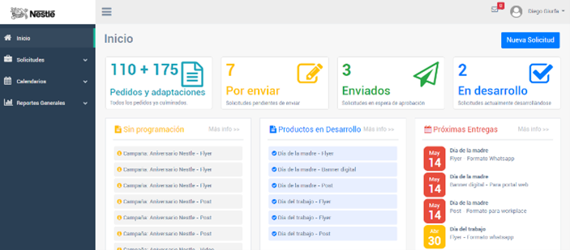

Xpressa – Sistema de Gestión de Producción Gráfica
Contexto
Xpressa, una empresa especializada en diseño y producción de piezas gráficas para campañas publicitarias, enfrentaba un serio problema de coordinación entre diseñadores, jefes de proyecto y clientes.
El uso de hojas de Excel, correos electrónicos y mensajes dispersos provocaba desorden en la gestión, pérdida de información, incumplimiento de fechas y poca visibilidad del estado real de la producción.
Para resolverlo, se desarrolló un sistema integral de gestión de producción gráfica que permitiera controlar solicitudes, tiempos, asignaciones, indicadores y comunicación interna.
Solución Implementada
Se diseñó un sistema web a medida utilizando Laravel + MySQL, con un enfoque modular y escalable. La plataforma centraliza todo el ciclo de producción de piezas gráficas, desde la solicitud inicial hasta la entrega final.
Funciones principales del Front Office
- Registro y seguimiento de solicitudes de piezas gráficas.
- Calendario de programaciones por equipo y tipo de pieza.
- Indicadores de avance, capacidad y productividad por área.
- Sistema de notificaciones internas en tiempo real.
Funciones principales del Back Office
- Gestión de usuarios y roles (creativos, diseñadores, jefes, administradores).
- Gestión de empresas y clientes vinculados.
- Gestión de productos gráficos (banners, flyers, piezas impresas, campañas).
- Gestión de cargos y asignación de responsabilidades.
- Gestión de equipos de trabajo y cargas productivas.
- Gestión de tareas y subtareas por solicitud.
- Gestión completa de solicitudes con flujo: creación → diseño → revisión → aprobación.
- Gestión de indicadores y reporting operacional.
- Configuración de notificaciones automáticas por estado o vencimiento.
Tecnologías Utilizadas
- PHP – Framework Laravel
- MySQL como motor de base de datos
- Bootstrap para la maquetación responsiva
- jQuery para interacción rápida en UI
- API REST interna para manejo de solicitudes y reportes
- Servidor VPS en Linux Ubuntu
Arquitectura y Despliegue
- 1 servidor de aplicación (Laravel + Nginx)
- 1 servidor de base de datos MySQL
- Despliegue continuo en VPS
- Estructura modular para escalar nuevos tipos de piezas o flujos
Resultados Clave
- Reducción del 60% en tiempos muertos y pérdidas de información.
- Aumento del cumplimiento de fechas de entrega en más de 40%.
- Mayor visibilidad del estado de cada proyecto en tiempo real.
- Mejor comunicación entre equipos gracias al sistema de notificaciones.
- Centralización total de solicitudes y archivos en una sola plataforma.
Mockups del Proyecto
A continuación, se muestran vistas representativas del sistema Xpressa: tablero de solicitudes, calendario productivo y módulo de indicadores.